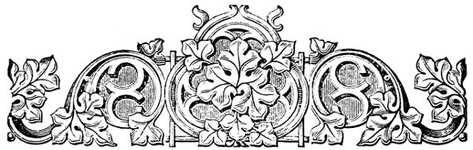
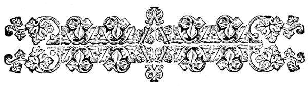
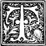
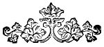
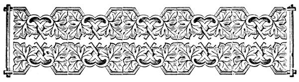

V.
THE COLONEL 'S STORY
O
N Sunday morning Maggie and Bessie were made ready , and taken over to Mrs. Rush 's rooms at nine o'clock , as had been arranged .
As Maggie had told Mr. Hall , Mrs. Rush could not leave the colonel to go to the church school ; but she was very anxious to do something for the lambs of the Good Shepherd , who had so lately brought her dear husband into the fold , and so she had begged that these little ones might come to her .
Mrs. Bradford was very glad to have her children go .
Bessie had never been to Sunday-school , and her mother thought the walk too much for her on a cold day ; but Mrs. Rush 's rooms were so near their own
home that she could go there in almost any weather .
As for Maggie , she was rather glad not to go back to the church school .
Her teacher , Miss Winslow , was going away , as you know , and she did not at all like the idea of having a new one .
`` I should be so very homesick after Miss Winslow , mamma , '' she had said , `` but now I shall not mind that so much ; and then Bessie will be with me , so we will be very happy . ''
Truly it was a pleasant class .
Four little girls who dearly loved each other , and the sweet young lady who was to be their teacher .
Then the room was so bright and sunny , and the colonel , to please his wife and her little scholars , perhaps also to please himself , had taken a great deal of pains to have all nicely prepared for them .
Four small cane-seated chairs stood side by side , and on each of them lay a Testament and a hymn-book , while on
the table were a number of picture-cards and a neat case containing a dozen books , which were to be their library .
`` When these are all read , '' said the colonel , `` they shall have some more . ''
There was only one thing which seemed wrong , but that was rather serious .
The dear teacher appeared as if she would scarcely be able to do her part that morning .
Mrs. Rush had taken a severe cold , and had a bad headache and a sore throat .
She looked quite ill , and when Mr. Bradford , who had brought the little girls over , shook hands with her , he said , `` I think you are in no fit state for teaching to-day .
You had better let me take the children home , and make a beginning next Sunday . ''
`` So I have told her , '' said Colonel Rush ; `` but she can not bear to disappoint herself or them , and I have agreed to let her try , on
condition that , if she find it too much for her , I am to take her place .
I do not know what kind of a teacher I shall make , but , at least , I can tell them a story . ''
Mrs. Rush said she thought she should do very well ; so Mr. Bradford went away , and in a few minutes Gracie Howard and Lily Norris came in , and they all took their seats .
Colonel Rush went into the inner room , where he could not be seen , but where he could hear if he chose ; and his wife began .
First , she made a short prayer , asking our Father in heaven to bless them with his presence and his love , that he would give her strength and grace to teach these lambs aright , and to them , hearts gentle and tender , and ready to learn the way of life , and that he would bring them all at last to dwell with him in his home beyond the sky .
Then she read to them of Christ blessing little children ,
and , showing them a card on which a picture of this was painted , talked to them about it .
`` Now we will sing , '' she said , `` or rather you may , for I shall not be able to help you .
We will take something you all know quite well , that there may be no difficulty about the tune .
' I want to be an angel . '
Who will start it ? ''
Any one of the children , if she had been alone , could have started the tune and sung it through without trouble ; but with all the rest waiting , not one felt as if she could begin .
They all sat looking at one another , each little girl afraid to trust her own voice .
`` Why , '' said Mrs. Rush , `` are we to have no singing at all ?
Can not one of you do it ? ''
Then came two or three notes from the other room .
Bessie took them right up , and the rest followed immediately .
As soon as
they were fairly started , the colonel paused , and let them sing it through by themselves .
Very nicely they did it , too ; their sweet young voices making pleasant music in the ears of their kind friends .
`` I want you each to learn a new hymn and a Bible verse , during the week , to say to me next Sunday , '' said Mrs. Rush .
`` We have had no regular lesson for to-day .
Can you not each remember a hymn to repeat now ? ''
`` I 'll say , ` Saviour , like a shepherd lead us , ' '' said Gracie ; and she repeated the hymn very correctly .
Lily said , `` Little travellers , Zionward ; '' but , as you probably know both of these pretty pieces , there is no need to write them here .
Bessie said the verses about the lamb , which she had repeated to Grandpapa Duncan at Riverside .
Maggie 's turn came last .
`` I am going to say the very best hymn that ever was made , '' she said .
`` How do you know it is the very best ? '' said Gracie .
`` Maybe it is n't so pretty as the one Bessie said .
I like that very much . ''
`` So do I ; but then this one
is
the best , for my own mamma made it , '' answered Maggie , as if there could be no doubt after this that her hymn was the best that could be written .
Gracie opened her eyes wide , and listened with all her might .
To have a mamma who wrote hymns , must , she thought , be very fine , and she did not wonder that Maggie felt rather proud of it .
`` Shall I say it ? '' asked Maggie of Mrs. Rush .
`` Certainly , '' said the lady ; and Maggie began .
`` Little one , what canst thou do ,
For the Lord who loved thee so ,
That he left his heavenly throne ,
To our sinful world came down ,
On the cross to faint and die ,
That thy ransomed soul might fly
Far beyond all sin and pain ,
Where the Crucified doth reign ?
`` Little hands , what can ye do
For the Lord who loved me so ?
`` Little hands fit work may find ,
If I have a willing mind ;
And whate'er the service small ,
If I only do it all
For the sake of God 's dear Son ,
He the simplest gift will own .
Little hands , so ye may prove
All my gratitude and love .
`` Little lips , what can ye do
For the Lord who loved me so ?
`` Let no harsh or angry word
From these little lips be heard ;
Let them never take in vain
God 's most glorious , holy name
Let sweet sounds of praise and joy
All your childish powers employ .
Little lips , so ye may prove
All my gratitude and love .
`` Little feet , what can ye do
For the Lord who loved me so ?
`` Follow Him who day by day
Guides thee on the heavenward way .
Little feet , turn not aside ,
Tread down shame and fear and pride ,
Aught might tempt ye to go back
From the safe and narrow track .
Little feet , so ye may prove
All my gratitude and love .
`` Little heart , what canst thou do
For the Lord who loved me so ?
`` Thou canst
love him
, little heart ,
Such thy blessed , happy part .
In his tender arms may rest ,
Lying there content and blest .
This is all he asks of thee ,
Little heart , oh ! lovest thou me ?
Little heart , so thou mayst prove
All my gratitude and love .
`` Little one , this thou canst do
For the Lord who loved thee so .
Little hands and little feet
Still may render service meet ;
Little lips and little heart
In such glorious work bear part .
Little one , thus thou mayst prove
All thy gratitude and love . ''
`` Oh , how nice ! '' said Gracie ; and Lily said the same thing .
`` And mamma is going to make music for it , '' said Bessie , `` so we can sing it . ''
`` Then we will all learn it , '' said Mrs. Rush .
`` We shall have a piano here next Sunday , and there need be no more trouble about our tunes .
Now I will tell you a little story . ''
But when she began to talk again , she was so hoarse that she could scarcely speak , and the children saw that her throat was very painful .
`` Do n't try to tell us ; you feel too sick , '' said Bessie .
`` We 'll just sit still , and be as quite as mices . ''
Mrs. Rush smiled at her , and tried once more to go on , but just then the sound of the colonel 's crutches was heard , and the next moment he came in the room .
`` I can not let you go on , Marion , '' said he .
`` I will take your place .
Can you put up with a story from me , little ones , while my wife rests ?
She is able to do no more for you to-day . ''
Put up with a story from him !
That was a curious question from the colonel , who was such a famous story-teller .
They were all quite ready to listen to anything he might tell them , though they felt very sorry for dear Mrs. Rush , who , seeming rather glad to give her place to her husband , went to the other side of the room and took the great arm-chair ,
while the colonel settled himself on the sofa .
Bessie looked at him very wistfully .
`` Well , what is it , my pet ? '' he asked .
`` Do n't you think you 'd be more comfor ` ble if I was on the sofa by you ? '' she asked .
`` I am sure I would . ''
`` Indeed , I should , '' he answered , holding out his hand with a smile , and in a moment she was in her favorite seat beside him .
He told the others to stand around him , and commenced his story .
`` A little child sat upon a green sunny bank , singing to himself in a low , sweet voice .
It was not easy to understand the words of the song ; indeed , there did not seem to be much wisdom in them .
It was as if he were only pouring out in music the joy of his own young , happy heart .
`` It was a lovely place .
The bank on which
the child rested was covered with a soft green moss , while around him bloomed sweet flowers , blue violets peeping up from their nest of leaves , and filling the air with their delicious scent , pure lilies of the valley with their snowy bells , and the pale pink primroses .
Overhead grew tall trees , shading him from the rays of the sun which might else have beat too strongly on his tender head ; and among their branches the soft winds whispered and the birds sang joyfully .
At the foot of the bank was a path bordered with lovely ferns and grasses and flowers , such as grew above ; and beyond this again ran a little stream sparkling in the sunlight , and gurgling and rippling over and around the stones and pebbles which lay in its way .
And all -- the boy , the birds , the whispering leaves , the sweet flowers , the running brook -- seemed joining in one hymn of
praise to Him who made them and gave them life .
`` On the other side of the brook , and in a line with the narrow path , ran a broad road , on which also grew flowers gayer and brighter than those whose home was upon the bank or on the path ; but when one came nearer , or tried to pluck them , they were found to be full of thorns , or turned to dust and ashes in the hand .
`` Both road and path
seemed
to lead to the mountains , which lay in the distance ; but it was not really so .
There were many windings and turnings in both , so that one who traveled upon them could not see far before him .
Sometimes they would lead over a hill , sometimes around its foot , sometimes through a forest , sometimes through a bog or stream .
Those who became puzzled upon the broad road would lose their way and could seldom find
either track again ; for there was nothing to guide them , and they would go deeper and deeper into the dark woods or the treacherous bog , or perhaps fall into some deep pit , and so they were never seen again .
But if one who traveled upon the narrow path was in doubt whether he were right or no , he had only to lift his eyes , and the true way would be pointed out to him ; for all along were guide-posts , and upon them were golden letters which shone so brightly that he who ran might read ; and they told him which turning he must take .
By the side of the path there ran also a silver thread , and he who kept fast hold of this could seldom or never go astray ; for if he was about to turn aside , fine points or thorns would rise up in the thread and , pricking him , bid him take heed to his steps .
But however the path might wind , in and out , now here , now there , it still led onward to
the mountains whose tops were to be seen in a straight line with the child 's home ; and he who followed it could not fail to come there .
`` The child was still singing , when a stranger came up this path .
He stood still and looked at the boy with a smile , as though the simple song pleased him .
'' ` What is thy name , little one ? ' he asked .
'' ` Benito , ' answered the child .
'' ` Ah ! thou art well named , for truly thou art a blessed child .
What a lovely home thou hast ! '
'' ` But this is not my home , ' said Benito .
` My Father placed me here for a little while , but my home lies far away on the mountains yonder where he is .
There is a beautiful city there , where my Elder Brother has gone to prepare a place for me .
Stay ; ' and the child put his hand into his bosom and drew out a
glass ; ` look through this , and then thou wilt see the beautiful city ; thou mayest even see my Father 's house .
This glass is called Faith , and my Brother bade me look through it when my feet were tired and my heart was faint . '
`` The stranger took it from his hand , and looking through it , gave a glad cry of surprise ; then took from his own breast a glass like the boy 's , but not so fresh and bright .
'' ` I , too , have a glass , ' he said ; ` but it is not so clear as thine .
It is my own fault , for it needs constant use to keep it pure and undimmed , and I have not brought it forth as often as I should have done .
But now the beautiful sight which I have seen through thine has taught me what I lose by letting it lie hidden away .
And when art thou to go to thy Father 's house ? '
'' ` Now , ' said Benito , ` for the message has
come for me , and I am to start to-day upon the very path on which thou standest . '
'' ` But it will be a hard way for thee , ' said the stranger , in a pitying voice .
' I am taller than thee , and can look farther ahead , and I see rocks and stones which will hurt those tender feet , and hills which will be difficult for thee to climb , and streams whose waves will be almost too much for thee .
Wait till thou art a little stronger and more able to travel . '
'' ' I can not wait , ' said Benito ; ' I have heard my Father 's voice , and I must not stay . '
'' ` And hast thou food and drink for the journey ? '
'' ` My Father has promised that I shall be fed with the bread of life , and drink from living waters . '
'' ` But that white robe of thine will become soiled with the dust and heat of the day . '
'' ` This white robe is called Innocence , ' said the child .
` My Father clothed me in it when he left me here ; and if it should become spotted by the way , he has said that it shall be washed white again before I go into his presence . '
'' ` Truly thou hast made good use of thy glass , ' said the stranger ; ` and thine own courage puts my fears for thee to shame .
I , too , am bound for the mountains , for thy Father is my Father , thy home my home .
Come , shall we journey there together ?
We may perhaps aid one another .
I can help thee over the rough places ; and thou mayest now and then let me take a look through thy glass till mine own is brighter with more frequent use . '
'' ' I will go with thee , ' said Benito , who liked the kind , gentle face of the stranger ; and coming down from his mossy seat , he put
his hand in that of his new friend , who told him his name was Experience .
'' ` Men call me a hard teacher , my child , ' he said ; ' I trust I may be gentle with thee .
I shall not be able to be always at thy side , for I may have work to do which thou canst not share , and I may leave thee for a time ; but I will always await thee or follow on after thee . '
`` Experience was a grave-looking man , and his face had a sad and weary look as though he longed for home and rest .
But he had always a smile for the child when he turned towards him .
His dress was of gray , and about his neck he wore a chain of golden beads .
So they journeyed on together , the man and the boy ; each with a hand upon the silver thread which ran by the wayside .
'' ` What is that chain about thy neck ? ' asked Benito .
'' ` It is the gift I carry to our Father , ' said
Experience , looking down with a smile at the chain .
'' ' I have no gift , ' said the child ; ' I did not know that I should need one .
My Elder Brother told me he had paid the price which should give me entrance to the beautiful city . '
'' ` He has done so , ' said the other , ` and though thou goest with empty hands , thou shalt have as loving a welcome as if thou hadst all the wealth of the universe to offer .
But still , one would wish to have some gift to lay at our Father 's feet .
Perhaps thou mayest find some jewel on the road .
I had nothing when I started .
These beads have been given to me , one by one , by those whom I have helped or taught by the way ; for , little one , thou art not the first whose hand has been laid in mine ; and I have strung them together as a fit offering for him to whom we go . '
'' ' I have no bead to give , ' said Benito , sadly .
'' ` No matter ; that white robe of thine gives thee a claim upon my care , which I could not set aside if I would .
Cheer up , sweet child .
If a jewel fell in thy way , and thou didst not stop to pick it up , that thou mightst carry it to our Father , then indeed there would be reason to fear his displeasure , but if thou findest none , he will ask none . '
`` So Benito was comforted , and once more went on his way rejoicing .
His sweet talk cheered the older pilgrim , and every now and then they would both break out into songs of praise and joy .
Experience helped the little one over many rough places , for though the path was at first easy and pleasant , it soon grew hard and stony .
Then they passed through a dark forest , where Benito could scarcely have kept his feet but for the help of
his older and wiser friend , who took him in his arms until they were again upon the open road .
But even among the brambles and thickets of the forest the way was plain , if they but looked up at the guide-posts ; for the greater the darkness , the brighter shone the letters .

VI .
THE STORY CONTINUED .

`` T
HEY journeyed on till they came to a grotto built upon the side of the path , and Experience said , ` It is now the seventh hour , and we may turn in here for food and drink . '
`` So they went into the grotto , where were many other pilgrims , and were fed with the bread of life , and drank of living waters , so that they were strengthened for the rest of the journey .
And this food they received from the hands of two soldiers , -- an old man and a young one , -- both of whom were in shining armor , with a white cross upon the shoulder , and upon the breast of each hung a string of jewels , so bright that the eye could scarcely rest upon them .
'' ` Did they find those jewels by the way ? '
Benito asked of his friend .
'' ` Yes , ' answered Experience .
` The jewels are souls that have been saved by the food which our Father taught these soldiers to serve . '
'' ` And see , ' said the child , ` there is another pilgrim with a shining star about his neck . '
'' ` He started upon his journey with much gold , ' said Experience .
` And he made good use of it ; building such grottos as this , where tired pilgrims might rest and be fed , and others where the sick and lame might be healed .
And he did this , not for his own glory , but for love of Him whose children he rejoiced to help .
So the gold has come back to him in the form of this star , which he may offer to his Master . '
`` And as the little one looked around
among the pilgrims , he saw that most of them had some gift which they were taking to their Father ; and his own heart grew sad again , for he had as yet found none , though he had looked carefully by the way .
`` When the seventh hour had gone by , the pilgrims all went forth on their journey again .
Some kept near Benito and Experience , others passed far ahead , and some few were left behind .
But the two soldiers were always near ; for as Experience walked slowly , so that he might help the little one whose hand lay in his , so the younger soldier also held back , that he might lend his arm to aid the feeble steps of the older .
`` They now came to a black bog where the guide-post pointed to a narrow bridge which led them safely over it .
But from the midst of the bog came terrible cries .
` Come and help us , for we have lost our way ; and if we
are not set right , we shall never reach our home . '
`` Then the two soldiers said they must go and help the poor lost ones , and Experience said he would go with them .
'' ` For the path is pretty plain for some distance now , ' he said to Benito , ` and I think thou couldst walk by thyself for a while .
Only from time to time look at the guide-posts , and be sure to keep fast hold upon the silver thread . '
Then he left him to go with the soldiers .
`` So the boy went on by himself , watching carefully for the jewel he hoped to find .
And as he looked , a poor lame bird hopped upon his path .
The broad road was very near to the narrow one in this spot , and walking upon it were many children and older people .
These children had long been calling to Benito , telling him to come where the ground was soft and
easy to walk upon , and where he might play all the day long if he chose .
But Benito would not listen , for Experience had told him to close his ears ; and besides he had the command of his Elder Brother that he should set his feet on the narrow path .
`` The bird was a poor , half-starved looking thing , with a broken wing ; for these cruel children had caught it , and after teasing and tormenting it for a long while , had stoned it .
It had at last escaped them , and fluttering across the stream which divided the roads , fell at Benito 's feet .
`` The boy raised it gently , bound up the broken wing , and gathering some of the grass which grew by the wayside , made for the bird a soft nest .
Then taking from his bosom a piece of bread , given to him by the old soldier lest he should be hungry , he fed it with some
crumbs , brought it water from the stream , and left it there in comfort and safety .
`` On he went , wishing for his friends , and still looking for the jewel .
Suddenly he saw before him a beautiful butterfly , with wings of crimsom , blue , and gold .
It flew gayly about him , now lighting on his shoulder , now circling round his head ; but never coming where he might lay his hand upon it .
'' ` What a lovely thing ! ' he said to himself .
` If I may but catch it , I will take it to my Father . '
`` The butterfly lighted upon a flower , and the child sprang after it .
Away it flew to another , and he followed , still to miss it .
On they went , from flower to flower , until it reached the stream , and flying across , lit upon a showy tulip , just upon the farther side .
Benito hesitated and drew back , for the insect was now upon the forbidden road , and he
feared to disobey .
But there was the butterfly fluttering its lovely wings in the sunlight , the stream looked narrow here , he could reach the prize , and be back in an instant .
He should be so glad to show it to his friends when they joined him again .
As he thought thus , he loosened a little his grasp upon the silver thread , and instantly small prickles started up upon it , reminding him of his duty ; but he looked again at the butterfly , and then , forgetting all else , let go his hold altogether , sprang across the stream , and once more reached forth his hand .
Again the butterfly fluttered off a little farther , this time burying itself in the very heart of a lovely flower .
'' ` Ah , I have thee now , ' said Benito , and , springing forward , his hand closed upon the blossom .
But he instantly drew it back , crying aloud with pain , for sharp nettles ran themselves into his tender palm , and the butterfly
suddenly changed into an ugly creeping thing .
He heard around him mocking laughter and loud , angry cries , and , terrified , he turned to go back .
But he found himself in a bog where his feet sank deeper and deeper , and his white dress became soiled and spotted .
When he looked towards the stream , its waters had become black and muddy , and a fog hung over it so that he could not see the narrow path .
He drew his glass from his bosom , but alas it was so clouded that he could not see through it , and then he cried aloud in his pain and grief .
Suddenly there came a voice from beyond the mist , --
'' ` Step boldly into the stream , my child , these are the healing waters of Repentance and Confession , and thou shalt pass safely through them to the true way once more . '
`` Benito hesitated no longer , but plunged bravely into the muddy stream .
And behold
the mist lifted at once , the waters became clear , and he saw upon the opposite bank the older soldier , who held out his hand to him .
The child grasped it , and in another moment , he stood safe , but weak and trembling beside his friend ; and as he looked down in fear and distress , lest his dress were not fit for such company , he saw it was white and pure again , cleansed by the waters through which he had passed .
`` Then came Experience and bound up the little bleeding hands , and replacing one upon the silver thread , took the other in his own .
'' ' I wished to carry the beautiful insect to my Father , that he might know I thought of him on the way , ' sobbed the child .
'' ` That butterfly is called Temptation , beloved , ' said the old soldier , ` and could not fail to lead thee astray if thou didst pursue her .
She has many ways of deceiving those whom she would lead into sin ; and , seeing the strong wish of thy young heart to gain some gift which thou mightest carry to thy Father , she took that very means to draw thee aside from the path of duty . '
`` The little one sighed , for his heart was sad , not as much for the pain he had suffered as for his bitter disappointment .
After a little , he thought of his glass , and drawing it forth , found it bright and undimmed as it had been when he started .
Then he grew happy again , and was going on his way singing , when he saw a boy , smaller than himself , sitting by the wayside , weeping .
`` Benito ran up to him .
` What aileth thee ? ' he asked .
'' ` Ah ! ' said the boy , ` my sister and I were going home , hand in hand , and we were so happy , for we loved one another dearly ; but
a shining angel came and carried her from my sight , and now I am alone . '
`` Then Benito drew the other 's head upon his breast , and kissed him and wept with him , and spoke tender words to him , so that the child was comforted .
Then they went on together , but they had gone but a few steps when the shining angel came again , and taking Benito 's new friend in his arms , carried him away also .
He smiled sweetly on Benito as he passed out of sight , and our young pilgrim felt a great joy in his heart to think that he had given comfort to the little stranger .
`` A short distance farther on , the travellers overtook an old woman , bending beneath the weight of a heavy burden which she carried .
She seemed very feeble , and Benito was grieved for her as he saw how she tottered and how hard it was for her to bear up beneath her load .
She was faint and hungry
too , and at every step it appeared as if she must sink down .
'' ` Can I not help thee ? ' asked Benito .
'' ` Dear child ! ' said the old dame .
` How can those tiny hands help to bear a burden such as mine ? '
'' ' I can try , ' said Benito .
` Lay a part of it upon my shoulders .
I will take all I can to lighten thine .
And see , take this ; it will strengthen thee for the rest of the journey ; ' and he handed her the piece of bread which the soldier had given for his own needs .
`` The dame took it and eat , and strength came to her as the boy had said ; and as he tried to bear upon his shoulders a part of her load , she , too , shed tears which fell upon his bosom as she leaned over him .
But they were tears of gratitude and blessing , and did her good ; so that after this she went on her way with more comfort .
`` And now the day was drawing to its close , the sun was setting , and the end of their journey was near ; for the pilgrims could plainly see the river which lay between them and the mountains where their Father dwelt .
But just on the nearer side of the river rose a high hill , and on it was a castle , where lived a cruel robber named Doubt , who often came down and dragged many pilgrims up to his castle just when they were in sight of their home .
When the soldiers saw this , they said there was one more fight to make before they crossed the river , and again Experience went with them , leaving the child at the foot of the hill , and telling him that if he were frightened , or if the robber came to carry him away , he had only to gaze through his glass at the opposite side of the river and all fear and danger would pass away .
`` So the three went up the hill , and the child
sat down to await their return .
As he sat there , he looked at the river and was afraid , for he thought , ` How can such a little one as I pass through those deep waters ?
The waves will be too strong for me , and will carry me away . '
`` Then he remembered what Experience had told him , and looking through his glass , he saw that the waves were so shallow that they would scarcely wet his feet ; and on the other side rose his Father 's house , so beautiful , so glorious , that he cried aloud with joy and with longing to pass the river and be there .
`` But now he found he was not to sit still , for as the fight went on above , and the soldiers and Experience gained the victory , one after another of the prisoners came down the hill , wounded and bleeding , for they had risen to help those who came to set them free , and had been terribly hurt in the battle .
`` Benito rose and did what he could for them , bringing water to their thirsty , fevered lips , staying the blood as well as he could , and gathering fresh grass and moss for pillows for their weary heads .
And while he was so busy , he felt a touch upon his shoulder , and looking up , he saw the shining angel who had carried away the little boy with whom he had wept .
'' ` Come , ' said the angel , ' I am thy Father 's messenger , sent to carry thee over the river . '
`` The little one stretched out his arms with a cry of joy ; but , even as he did so , the old thought came to him , and he said , sadly , ` Ah , I have found no jewel to offer to my Father ! '
`` The angel made no answer , but lifted him up , softly kissing his forehead , and Benito sank gently into his arms .
The angel carried
him swiftly over the river , and on the other side stood his Elder Brother , who received him from the messenger , and laid him in his bosom ; and he said to Benito , ` My lamb , put thy hand into thy bosom and see what thou findest there . '
`` The little one obeyed , and drew forth a string of pure white pearls , so fair , so lovely that they seemed more beautiful than any of the shining jewels which his fellow-pilgrims had worn .
'' ` That is thy gift unto thy Father , ' said his Brother .
` These are the tears which the young child and the old dame shed upon thy bosom , the drops of water which thou didst bring to the fainting prisoners , with which thou didst cheer the drooping bird .
They have changed into these fair pearls , and returned unto thine own bosom , because in doing it unto them , thou didst it unto me .
See , there is thy welcome into the home of the blessed . '
`` Then looking up , Benito saw written over the door of his Father 's house , ` Blessed are the merciful , for they shall obtain mercy . '
`` And his Brother carried him into his Father 's presence , where he cast his pearls at his feet , and was received into his love and care for evermore . ''
The colonel paused and looked at the children , fearing that he might have made his story too long .
But it did not seem so , for they all were so interested that they had quite forgotten everything else .
Bessie lay back with her head on his arm , and her eyes fixed on his face as if she feared to lose a word ; while even Maggie 's restless hands were quite still , lying clasped on the arm of the sofa as she stood motionless beside him .
Gracie and Lily had drawn up their chairs and sat
in front of him , listening as eagerly as the others ; and now Lily drew a long breath , and said , `` Is that all ? ''
`` All ! '' said the colonel .
`` Yes . Is it not enough ?
I feared you would be quite tired of me and my story . ''
`` Oh , no ! '' said Lily .
`` I wish you would tell us stories all day .
I should
never
be tired . ''
`` I should then , '' said Colonel Rush , smiling .
`` And it is nearly time for you to go home , now . ''
`` Colonel Rush , '' said Gracie , `` is n't your story what is called an allegory ? ''
`` Yes , '' he answered .
`` Did you understand it , Bessie ? ''
`` Most all of it , '' answered Bessie .
`` You meant that even little children can do something for Jesus if they are kind and good , and he wont care if it is only a little thing , if they do it 'cause they love him . ''
`` You are right , my darling . ''
`` And when the boy went in the wrong road after the butterfly , you meant that we must not do wrong even when we thought it was for a good purpose , '' said Maggie .
`` Mamma told me that the other day . ''
`` And the Elder Brother means Jesus , '' said Lily .
`` I am glad you all understand it so well , '' said the colonel , `` and still more glad that you all like it .
It was Maggie 's little hymn which made me think of it .
So you may thank her , too , for any pleasure it has given you . ''
`` And who is Experience ? '' asked Maggie .
`` Experience may be older people who are generally wiser in some things than the little ones , and can help them along ; but who may yet learn much from a child . ''
`` Children can not teach grown people ; can they ? '' said Lily .
`` I think they can , '' said Colonel Rush , laying his hand lovingly on Bessie 's head .
`` The best lesson I ever learned in my life was taught me by a little child . ''
`` Who ? '' asked Maggie .
`` And what was the lesson ? '' said Gracie .
`` You must not ask , '' he answered .
`` Here is your papa , Maggie ; and Tom for you , Lily . ''
The children said good-by to their kind friends , and went away , promising gladly to come again the next Sunday .


VII .
THE PEACH-STONES .
 T
HOSE peach-stones gave Maggie and Bessie a great deal to do .
They were very busy children in those days .
On Monday mamma began again with their lessons .
They went to her for an hour each morning after they came from their walk , said a reading and spelling lesson , a little of the multiplication-table which Maggie said she was sure was made just `` to bother little girls , '' and a verse of poetry ; and when the hour was over , had a short sewing lesson .
Maggie 's `` towel task , '' as she called it , was done later in the day whenever her mamma had time to attend to her .
T
HOSE peach-stones gave Maggie and Bessie a great deal to do .
They were very busy children in those days .
On Monday mamma began again with their lessons .
They went to her for an hour each morning after they came from their walk , said a reading and spelling lesson , a little of the multiplication-table which Maggie said she was sure was made just `` to bother little girls , '' and a verse of poetry ; and when the hour was over , had a short sewing lesson .
Maggie 's `` towel task , '' as she called it , was done later in the day whenever her mamma had time to attend to her .
As soon as the sewing lesson was over , they
went to the yard to look after the peach-stones .
Patrick saved them all for Bessie , and had found two boards for her on which she might dry them ; and never peach-stones needed so much attention .
In the first place , there was each morning the plate full which Patrick had collected from the table to be washed and spread out on the boards , and the whole number counted over and over again , for they could never make them twice the same .
Often when they went out , they found the cats had come over the fence , and knocked them down into the earth of the flower-garden , and they all had to be washed over again .
Then Flossy , who was always with them now , would insist on scrambling over the boards , and would send the peach-stones flying in every direction , for he thought it fine fun to see them rolling about .
There is no
telling how much they enjoyed all this trouble , or how distressed they would have been , if it had been suddenly brought to an end .
Indeed , they were quite disappointed if they found everything in good order when they went out in the yard .
`` Margaret , '' said Mr. Bradford to his wife one day , as he sat at the library window , watching his little daughters at their work , `` how long do you suppose it will take those peach-stones to dry at this rate ? ''
Mrs. Bradford laughed as she came and looked over his shoulder .
`` Dear little things ! '' she said .
`` How they do enjoy it !
I believe they fancy they are doing the chief part of the work for our peach preserves , besides gaining something to add to their store for the library .
I shall be sorry when the warm weather is at an end , and I shall have to forbid them to play with
water .
It gives some trouble , to be sure , in the matter of dresses and aprons , but I have not the heart to stop them , while I do not fear they will take cold . ''
Nurse grumbled a good deal over the wet dresses and aprons .
`` Who ever heard of such doings ? '' she said one day .
`` And what 's the good of it all ?
Them little ignoramuses out in the backwoods ca n't read your books when they get 'em . ''
Maggie was very much displeased .
`` You ought not to talk so , nursey , '' she said .
`` If those children do n't know how to read , they can be taught .
And do n't you like to do missionary work ? ''
`` Missionary work ! '' said nurse .
`` And do you think I 'd leave my comfortable home to go missioning ? ''
`` That 's because you 're not so very good , '' said Maggie , gravely .
`` Miss Winslow is
going to leave her comfortable home , and go to teach those little children that you called such an unpleasant name ; and it 's very good of her .
Besides , you need n't go away to do missionary work ; you can do it here if you choose . ''
`` And how 's that ?
I 'd like to know , '' said nursey , whisking off Maggie 's wet dress .
`` If we want to help people , we can do it without going away , '' said Maggie , `` and sometimes it 's our duty to do it , and then that 's our mission ; mamma said so .
Now , nursey , do n't you think you have a duty ? ''
`` If I have , I do n't need you to teach it to me , '' said nurse .
`` No , '' said Maggie , `` I am not going to teach you , 'cause you are old , and I am little , but I am just going to enter an ex-plan-a-tion for you , 'cause you do n't seem to understand . ''
At this , Jane , who was dressing Bessie began to giggle , and nurse put her head into the wardrobe , where the children 's dresses lay .
`` Now , '' Maggie went on , `` you see Miss Winslow thinks it is her duty to go and teach those log-cabin children , and that 's her missionary work ; and it 's Bessie 's duty and mine to help her if we can , so it 's our missionary work to buy the library ; and it 's your duty to dress us if we get ourselves wet while we earn the money , so that 's your missionary work ; and you ought to do it with a cheerful mind , and not scold us . ''
Nurse tried to look grum , but the corners of her mouth were twitching , and when she had fastened Maggie 's dress , she gave her a hug and a kiss which did not seem as though she were very angry .
As soon as the little girls had run away to
their mamma 's room , nurse and Jane laughed heartily .
`` Well , well , '' said nurse , `` to hear the reasoning of her !
And she has the right of it , too , bless her heart , and just shames her old mammy . ''
After this , there was no more grumbling about the wet dresses .
One night there was a hard storm , and in the morning , when the children went out , they found that the rain had washed sand and gravel all over their precious peach-stones .
This , of course , must be attended to immediately , and it was quite a piece of work , for by this time they had collected seven or eight hundred .
`` We ought to have something large to wash them in , '' said Maggie .
`` What can we find ? ''
Now , Mrs. Bradford had a new cook , who
had only been in the house for two or three days ; and , as the children were seldom allowed to go into the kitchen , she was as yet quite a stranger to them .
This cook had not a good temper , but she was very neat , and that morning she had been making a great scrubbing and polishing of her tins , after which she put them out in the sun .
Looking about for something in which to wash their peach-stones , Maggie and Bessie saw these tins , and among them a bright new colander .
`` Oh , that 's just what we want , '' said Maggie .
`` Can we take it , Patrick ? '' she asked of the good-natured waiter , who was cleaning knives in the area .
'' ` Deed , and ye may , '' said Patrick , who thought his little ladies must have everything they asked for .
Much delighted , the children filled the colander with peach-stones , and , carrying it to
the hydrant , turned on the water , thinking it fine fun to see it stream through the holes of the colander .
Meanwhile Flossy , who was running about the yard , putting his nose into everything , found a quantity of muffin-rings , and thinking that these would be good things for him to play with , soon had them rolling about in every direction ; but our little girls were too busy to see that he was in mischief .
It took some time to wash all the peach-stones , but they were done at last , and just arranged again in regular rows upon the boards , when the cook came out to take in her tins .
Angry enough she was when she saw the rings scattered around , and the clean , bright colander smeared with sand and gravel ; and terribly she scolded .
`` How dare ye ! '' she said to Maggie and Bessie .
`` I 'll teach ye to touch my tins . ''
`` They 're not yours , '' said Bessie , `` they are mamma 's .
Maggie and I were with her the other day when she bought that basin with holes in , and she only lent them to you ; and , cook , we do n't be talked to in that way ; mamma do n't allow it . ''
This made the cook still more angry , and she scolded in a way quite terrible to hear , while the children stood looking at her , too much astonished and frightened to answer .
But Flossy never heard any great noise without trying to add his share , and he now began to bark at cook with all his might .
`` There now , '' said Patrick , `` do n't ye make such a fuss , Bridget , and I 'll just wash yer colander as clane as a new pin .
They 're not used to sich talk , is n't the little ladies ; for it 's dacent people we are all , Mrs. Bradford 's help , and not a hard word among us at all , at all .
Come now , be civil ; and do you run to
your play , honeys ; it is no harrum ye have done . ''
But the cook would not be pacified , and scolded louder and louder , while the more she scolded , the louder Flossy barked .
`` Cook , '' said Bessie , `` you are a very naughty woman , and I do n't think we 'll keep you . ''
`` Woof , woof , '' said Flossy .
`` Be off with you , '' said cook .
`` You 'll fly at me , will you ? ''
`` Woof , woof , '' said Flossy .
The woman snatched up Patrick 's knife-brick , and with a very bad word to the children , was about to throw it at the puppy , when Patrick caught her arm ; and the frightened little ones , catching up their dog , scampered off as fast as their feet could carry them .
Up the back steps and through piazza and
hall , till they reached the front stairs , where they sat down quite out of breath .
For a moment or two neither of them said a word , but sat looking at each other , as if they did not know what to make of all this ; while Flossy , thinking he had made noise enough for this time , curled himself up in Maggie 's lap for a nap .
At last , Maggie gave a long sigh .
`` Oh , dear , '' she said , `` what a dreadful woman ! ''
`` And what a wicked word she called us ! '' said Bessie .
`` Maggie , what shall we do ? ''
`` We 'll have to tell mamma , '' said Maggie ; `` she ought to know it . ''
`` But , how can we tell her ?
I do n't like to say that word , and , Maggie , I do n't like you to say it either . ''
`` But I s ` pose we 'll have to , '' said Maggie .
`` Mamma would n't like to have a swearer in her house . ''
`` And what will be done to the cook ? '' asked Bessie .
`` Will she be hung ? ''
`` No , I guess not , '' answered Maggie .
`` I think they only hang people when they kill somebody .
But I s ` pose she 'll have to be took to prison .
Papa 's a lawyer , and I guess he 'll send her . ''
`` I thought the policemen did that , '' said Bessie .
`` I 'll tell you , '' said Maggie .
`` You know papa goes down town ? ''
`` Yes , to his office . ''
`` And he goes to another place called ` court , ' '' said Maggie .
`` Well , when somebody is very wicked , the police officer comes , and takes him to the lawyer , and he says , ` Mister , this is a very naughty person who has done something very bad ; ' and the lawyer says , ` Here , you , go to prison , and just
behave yourself . '
And then the policeman takes him to prison , and locks him up . ''
`` Oh ! '' said Bessie , looking at her sister with great admiration , `` what a wise girl you are !
You know almost everything . ''
`` I am going to try and learn a great deal more , so I can tell everybody everything they want to know , '' said Maggie .
`` Maggie , do you think cook has been ` brought up in the way she should go ' ? ''
`` No , I do n't , '' said Maggie .
`` No ` way she should go ' about it . ''
`` Then do you think we ought to want her to be punished ? ''
`` I do n't want her to be punished , '' answered Maggie ; `` at least , not much .
But you see she
ought
to be .
Anyhow , we must tell mamma , and she 'll know what is best . ''
`` But how
can
we say that word ? '' said Bessie .
`` I 'll tell you , '' said Maggie , after a moment 's thought .
`` You say half of it , Bessie , and I 'll say the rest .
I 'll say the first half . ''
`` Well , '' said Bessie , with a long sigh .
`` I suppose we 'll have to .
Let 's go and do it quick then .
I do n't like to think about it . ''
Maggie laid Flossy down upon the soft mat at the foot of the stairs , and hand in hand , she and Bessie went up to their mother 's room .
Now it so happened that Mrs. Bradford had been passing through the upper hall as the little girls sat talking below .
She stopped for a moment to see what they were doing , and heard Maggie tell Bessie about the lawyer .
They did not see or hear her , and she would not wait to listen , though she was sure , from the sound of their voices that they were in trouble , but passed on to her room , where her sister Annie and Mrs. Rush were sitting .
She
told them what Maggie had said , at which they were very much amused .
`` Something has happened to distress them , '' said Mrs. Bradford , `` and I suppose I shall soon hear of it .
If they come up with any droll story , do not laugh , as it seems to be a serious matter to them . ''
Mrs. Rush and Annie Stanton promised to keep sober faces if possible ; but they did not know how much their gravity was to be tried .
A moment later , the children came in , and with grave , earnest looks walked directly to their mother .
`` Mamma , '' said Maggie , `` we have something dreadful to tell you . ''
`` Such a shocking thing ! '' said Bessie ; `` but we
have
to tell you . ''
`` That is right , my darlings , '' said mamma .
`` If you have done anything wrong , tell me at once , and I will forgive you . ''
`` It was not us , mamma .
It was the new cook .
Tell her quick , Maggie . ''
`` Mamma , '' said Maggie , almost in a whisper , `` she called us little dev ' -- ''
'' ` ul , '' said Bessie .
'' 's -- s -- s -- s ! '' said Maggie .
Down went Aunt Annie 's face into the sofa-pillows , while Mrs. Rush turned quickly toward the window to hide hers .
Mrs. Bradford coughed , and put her hand over her mouth , but it was all useless ; and Annie 's merry laugh was ringing in the children 's astonished ears .
Maggie colored all over , and the tears came in her eyes , while Bessie , with cheeks almost as red , turned angrily to her aunt .
`` You ought n't , you ought n't ! '' she said ; `` It is not a thing to laugh at .
It was a shocking , shocking word . ''
`` My darling , '' began mamma , then she ,
too , broke down and laughed with the other ladies .
This was quite too much ; Bessie hid her face on Maggie 's shoulder , and both burst into tears .
Mamma was grave in a moment .
She lifted Bessie on her lap , and drew Maggie close to her side .
`` My poor little ones , '' she said , `` that was too bad , but we did not mean to hurt your feelings ; '' and she soothed and petted them till they could look up again and dry their tears .
`` Now tell me all about it , '' she said ; and Bessie told her story with many a grieved sob , ending with `` And then she called us that name , mamma , '' for she would not trust herself to repeat the words which had caused her and Maggie so much distress .
Mrs. Bradford was much displeased with the cook , and reproved her ; but the woman
was saucy , and as she made much trouble in the kitchen , she sent her away .
The children were greatly surprised that no policeman came for her , and that she left the house quite quietly , as if nothing extraordinary had happened .
About this time an end came to the washing of peach-stones , for , as the weather became cool , mamma forbade Maggie and Bessie to play with water .
So the stones had at last a chance to dry ; then Patrick cracked them , and the children took out the kernels .
Boiling water was then poured over them , and when it had cooled enough for small fingers , the kernels were fished out ; and the skin which the hot water had loosened was slipped off by the little girls .
After that mamma allowed them to drop the blanched pits into the jars of preserves ; and papa declared that no peaches had ever tasted so good as those sweet-meats
which his Maggie and Bessie had helped to make .
They had collected thirteen hundred peach-stones , and earned sixty-five cents , which went into the `` library-box '' in mamma 's drawer .
Maggie had hemmed four towels , for which she had been paid twenty cents .
This , with papa 's twenty-seven bright pennies , made one dollar and twelve cents .